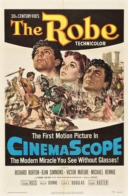

The Robe
Starring: Richard Burton, Jean Simmons, Victor Mature
Director: Henry Koster
Writer: Albert Maltz, Philip Dunne, Gina Kaus
Producer: Frank Ross
The Robe is a 1953 American Biblical epic film that tells the story of a Roman military tribune who commands the unit that is responsible for the crucifixion of Jesus. The film was released by 20th Century-Fox and was the first film released in the widescreen process CinemaScope. Like other early CinemaScope films, The Robe was shot with Henri Chrétien's original Hypergonar anamorphic lenses.
Trivia
- Won the Academy Award for Best Costume Design, Color.
- Won the Academy Award for Best Art Direction, Color.
- Won the Golden Globe Award for Best Motion Picture – Drama.
- Won the National Board of Review Award for Best Actress.
- Selected for the National Board of Review: Top Ten Films.
- Won the Golden Globe Award for Best Motion Picture.
- Also nominated for: Academy Award for Best Picture; Academy Award for Best Actor; Academy Award for Best Cinematography, Color; Directors Guild of America Award for Outstanding Directing – Feature Film.
- Based on The Robe (historical novel by Lloyd C. Douglas).
- In 1942, producer Frank Ross acquired the rights to Douglas' novel—before it was completed—for $100,000.
- Development of the film began at RKO Radio Pictures in the 1940s, with Mervyn LeRoy set to direct, but the rights were eventually sold to 20th Century-Fox for $300,000, plus $650,000 from future profits; Ross received $40,000, plus 20% of the profits.
- Jeff Chandler was originally announced for the role of Demetrius.
Previous Showings
2 Runs • 1 Festival
Original Billings: 1 run (November 25, 1953)
Original Run: November 25, 1953 (Wednesday - Thursday)
All runs on record (2):
- November 25, 1953 (Wednesday - Thursday)Richard Burton, Jean Simmons
- December 9 - 10, 200620th Century-Fox Film Festivalw/ Anastasia